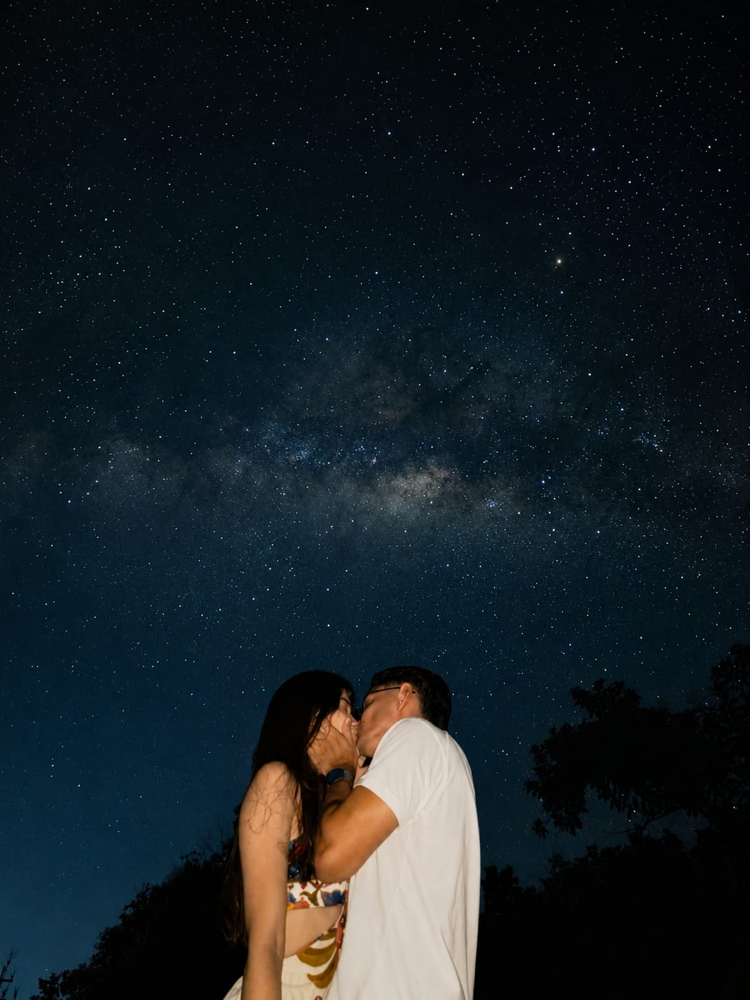

×

Eien ni, anata o aishite imasu.
Eclesiastes 4:9-10

03 de abril de 2024 ✨
O dia em que nossa constelação começou.
Entre bilhões de estrelas no universo, a mais especial para mim nunca esteve no céu. Ela estava na minha vida a partir do momento que nossas vidas se cruzaram. Obrigado por fazer parte da minha vida, dos meus sonhos, das minhas conquistas e dos meus melhores momentos. Que esta constelação seja apenas uma pequena lembrança de tudo o que construímos juntos. Eu te amo, Joyce. Feliz Dia dos Namorados ❤️